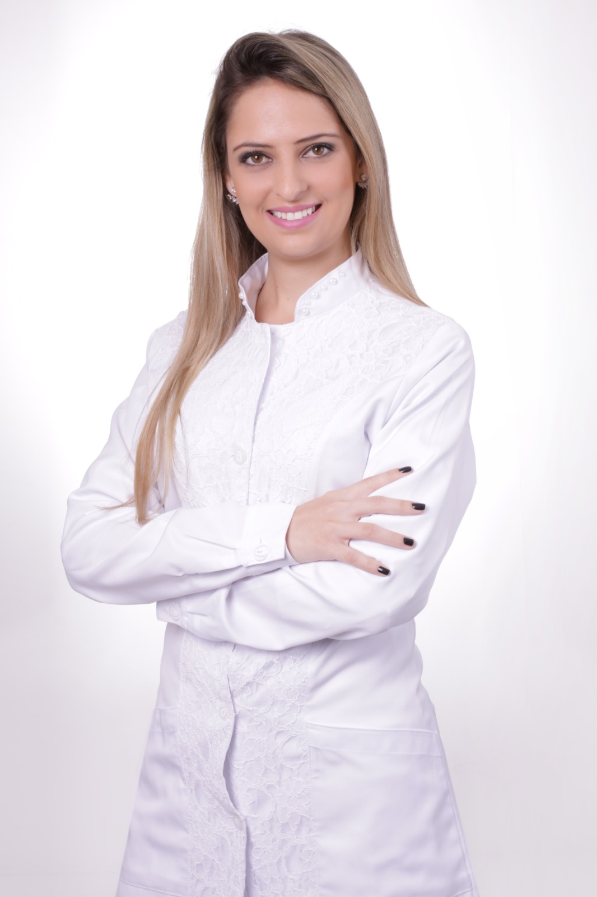
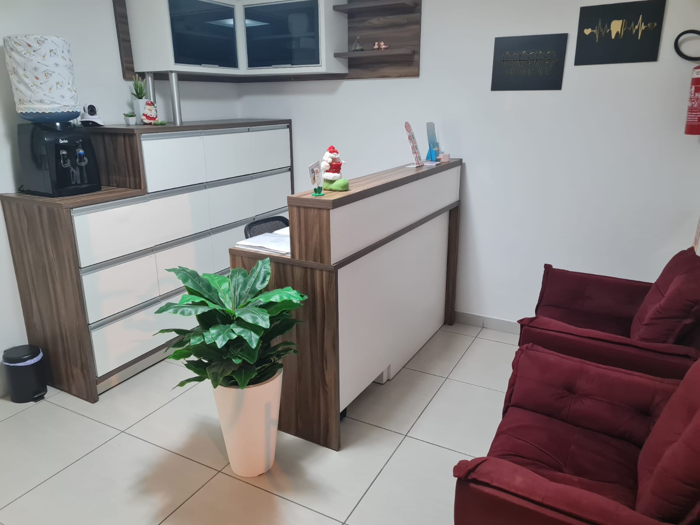
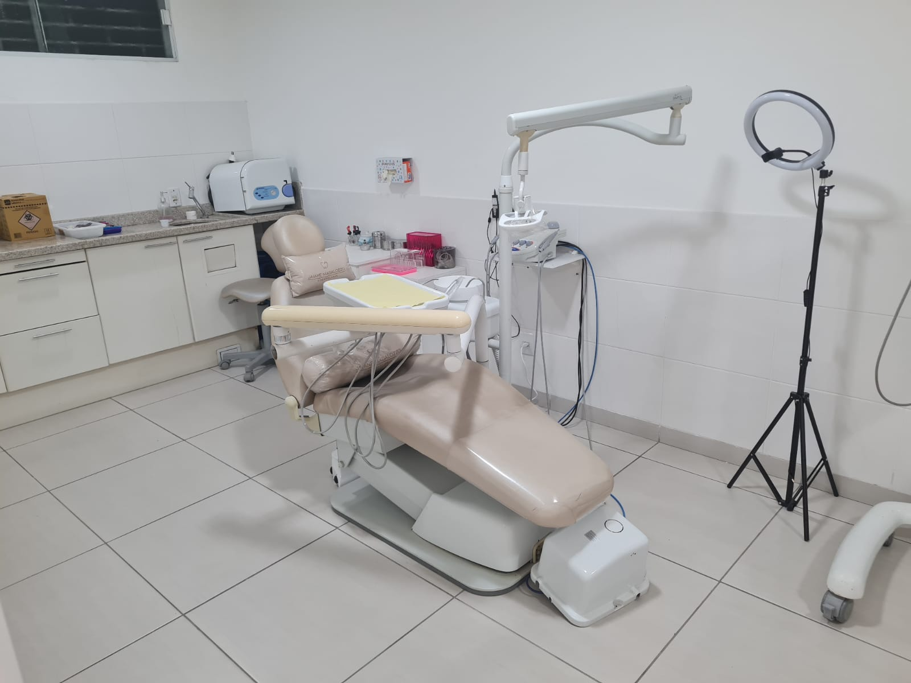
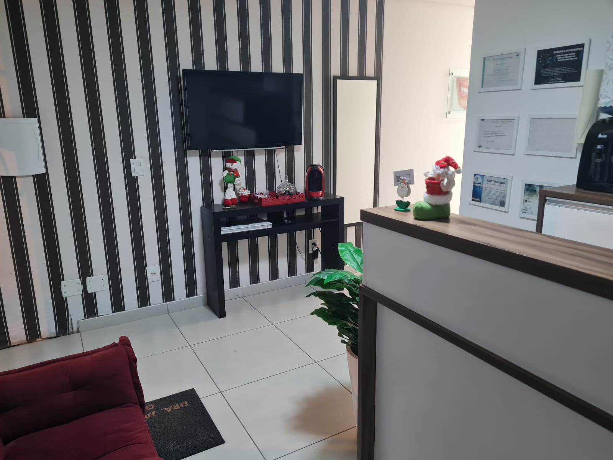

Cuidamos da sua saúde em cada detalhe para transformar sua autoestima e fazer você sorrir com total confiança.
Odontologia moderna e humanizada para transformar sua saúde bucal.
Agende sua Avaliação
Dra. Jaiane Madalozzo Ferreira
Formada pela Universidade do Vale do Itajai, sou apaixonada por transformar vidas através do sorriso. Busco constantemente as técnicas mais avançadas para oferecer um tratamento de excelência.
Acredito em um atendimento que une técnica, precisão e acolhimento, onde cada paciente é único. Meu compromisso é com a sua saúde, bem-estar e a beleza do seu sorriso.
CRO/SC 12-515
Nossos Tratamentos
Clinico Geral
Profissional de primeiro contato que cuida da saúde bucal de forma ampla, realizando prevenção, diagnóstico e tratamento de problemas comuns como cáries, doenças gengivais e restaurações
Clareamento Dental
Recupere a cor natural dos seus dentes com técnicas seguras e eficazes, para um sorriso mais brilhante e confiante.
Lentes de Contato
Pequenas lâminas de porcelana que corrigem imperfeições de cor, formato e tamanho, criando um sorriso harmônico.
Implantes Dentários
A solução definitiva para a perda de dentes, restaurando a função mastigatória e a estética com naturalidade.
Profilaxia (Limpeza)
Fundamental para a prevenção de doenças bucais, mantendo seu sorriso saudável e livre de tártaro e placa.
Odontopediatria
Atender crianças e adolescentes, cuidando desde o nascimento até a adolescência, com foco em prevenção, diagnóstico e tratamento.
Ortodontia
Correção dos dentes e ossos maxilares, tratando problemas como dentes tortos, apinhamento e mordidas incorretas para melhorar a saúde bucal e a estética
Prótese Dentária
Substitui dentes perdidos, restaurando a função de mastigação, a fala e a estética do sorriso.
Um espaço pensado para você
Contamos com um ambiente moderno, seguro e acolhedor para o seu total conforto.


